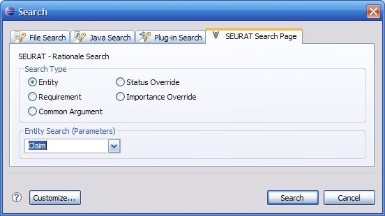
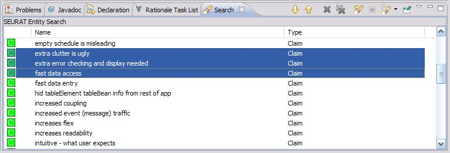

SEURAT makes it possible to retrieve a list of all the rationale entities of a certain type (requirements, decisions, alternatives, etc.). From the Eclipse search window navigate to the SEURAT Search Page.

The results of the query will be placed in the Eclipse search view. Each of the column headers can be used to sort the list of rationale elements on that column's data. Double clicking on any row in the table will open an editor which can be used to manipulate that entity. You may also access additional actions by right-clicking on any of the elements in the search results.
